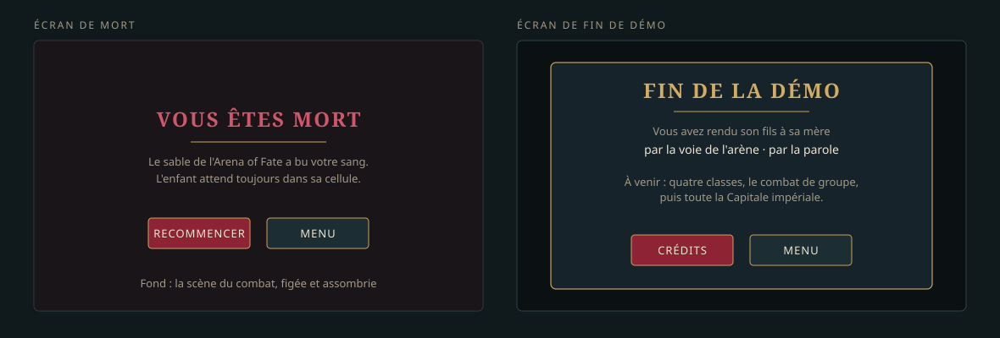

LOT-119 Les écrans de fin : mort et fin de démo
La démo se termine proprement : un écran de mort, un écran « Fin de la démo », tous deux à la charte v2.
Livrables
- L'écran de mort : « Vous êtes mort dans l'arène », recommencer ou quitter.
- L'écran de fin : ce que le joueur a fait (voie pacifique ou voie de l'arène), ce qui vient dans la version suivante, les crédits.
Critères d'acceptation
- Les deux écrans ont leur capture de référence QML.
- Tous leurs textes sont traduits en français et en anglais.
Maquettes
{kind=link}

Décisions de réalisation
D1 — Deux écrans de premier niveau, qui ferment la partie
ScreenId::Death et ScreenId::DemoEnd entrent dans la table des transitions : ils s'ouvrent depuis un écran du RPG (le HUD de combat, le dialogue) ou depuis la carte, et n'en sortent que vers une partie neuve, le menu ou les crédits. Aucun retour à la partie : la pause, les options et la fermeture d'un écran du RPG y sont refusées (ScreenFlowTest.LesEcransDeFinFermentLaPartie).
D2 — La mort s'ouvre d'elle-même, par-dessus la scène du combat
Dès que la défaite est publiée (la file a fini de montrer la chute), le HUD de combat ouvre l'écran de mort sans quitter la rencontre : la surface de rendu de la carte dessine encore les combattants là où ils sont tombés, sous un voile grenat — le « fond : la scène du combat, figée et assombrie » de la maquette. Le panneau d'issue du HUD ne sert plus que la victoire et la fuite.
D3 — Une partie finie ne laisse rien derrière elle
WorldModel.endGame() refait la session : aucune carte ouverte, drapeaux et quêtes oubliés, sauf ceux que le lancement a posés (--flags=), réglages du lancement gardés (--map=, --at=, --levels=). « Recommencer » quitte la rencontre, finit la partie et rouvre le jeu à la porte de la ville ; « Menu » fait de même vers le menu. Jusqu'ici, une défaite ramenait au menu et « Nouvelle partie » reprenait la partie où l'on venait de mourir. L'écran de fin de la démo finit la partie à son ouverture.
D4 — Un dialogue clôt la démo : l'action endDemo
La fin de la démo est un geste du récit : la mère, au dernier dialogue de la quête (LOT-120), exécute {"type": "endDemo", "ending": "<voie>"}. Le runner le transmet à l'interlocuteur (core::DialogueListener::endDemo), le modèle de l'écran l'émet (DialogueModel.demoEnded), et le routeur transporte la voie jusqu'à l'écran de fin (ScreenRouter.ending, endingText) — comme il transporte le dialogue ouvert. La voie se dit par la clé ending.<voie>, que le dialogue réclame (core::dialogueTextKeys) : le test de traduction des dialogues la vérifie en français et en anglais. Les deux voies de la démo, arene et parole, sont écrites dès ce lot ; le LOT-120 choisira, par une condition, laquelle son dialogue nomme.
D5 — Les textes
Les textes fixes des deux écrans sont des qsTr des formulaires, traduits dans jadg_en.ts (contrôlés par check_translations.py). Les deux lignes de l'écran de mort sont celles de la maquette, écrites pour l'Arena of Fate : c'est le seul combat létal de la démo. Le jour où un autre combat pourra tuer, elles deviendront une donnée de la rencontre.
D6 — Au clavier et à la manette
Gauche et droite changent de bouton, Entrée (A) valide, Échap (B) choisit « Menu ». La marque du focus signale le bouton désigné, jamais la seule teinte.
Tenue des critères
| Critère | Où |
|---|---|
| Capture de référence QML des deux écrans | QmlTests : References/DeathForm.png, References/DemoEndForm.png |
| Textes en français et en anglais | jadg_en.ts (check_translations.py) ; ending.* dans fr.lang et en.lang (DialogueTest.LesDialoguesSontTraduitsEnFrancaisEtEnAnglais) |
Livraison
PR #134 (avec le lot jumeau). La fiche passe à livre à la fusion.
Source : Planning/versions/v0.1.0/v0.0.1-demo/lots/LOT-119-ecrans-de-fin.md